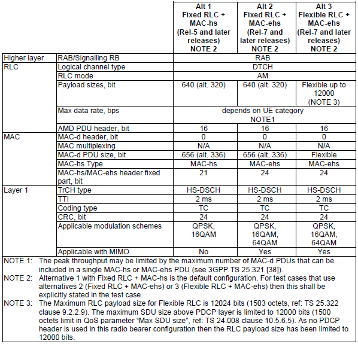

| Radio Bearer - Rel 6 |
|
This page is described with 34.108 section 6.10.2.4.6.5 as a frame.
Streaming or interactive or background / UL:[max bit rate depending on UE category and TTI] DL: [max bit rate depending on UE category] kbps / PS RAB + Streaming or interactive or background / UL: [max bit rate depending on UE category and TTI] DL: [max bit rate depending on UE category] / PS RAB + UL:[max bit rate depending on UE category and TTI] DL:3.4 kbps SRBs for DCCH on E-DCH and DL DCH
This tables is from 34.108 6.10.2.4.6.1.1.1.1.1 MAC-d flow parameters for Streaming or interactive or background / UL: [max bit rate depending on UE category and TTI] / PS RAB
< Transport Channel for HS-DSCH 34-108 - 6.10.2.4.5.6.2.1.1.1>

< Transport Channel for DCH - 34.108 6.10.2.4.1.2.2.1.1 >
< TFCI - 34.108 6.10.2.4.1.2.2.1.2 >
< TFCI - 34.108 6.10.2.4.1.2.2.2.2 >
DL-CCCH-Message ::= SEQUENCE [0] +-integrityCheckInfo ::= SEQUENCE OPTIONAL:Omit +-message ::= CHOICE [rrcConnectionSetup] +-rrcConnectionSetup ::= CHOICE [later-than-r3] +-later-than-r3 ::= SEQUENCE +-initialUE-Identity ::= CHOICE [imsi] +-rrc-TransactionIdentifier ::= INTEGER (0..3) [0] +-criticalExtensions ::= CHOICE [criticalExtensions] +-criticalExtensions ::= CHOICE [criticalExtensions] +-criticalExtensions ::= CHOICE [r6] +-r6 ::= SEQUENCE [00] +-rrcConnectionSetup-r6 ::= SEQUENCE [0000010010011] | +-activationTime ::= INTEGER OPTIONAL:Omit | +-new-U-RNTI ::= SEQUENCE | +-new-c-RNTI ::= BIT STRING OPTIONAL:Omit | +-new-H-RNTI ::= BIT STRING OPTIONAL:Omit | +-newPrimary-E-RNTI ::= BIT STRING OPTIONAL:Omit | +-newSecondary-E-RNTI ::= BIT STRING OPTIONAL:Omit | +-rrc-StateIndicator ::= ENUMERATED [cell-DCH] | +-utran-DRX-CycleLengthCoeff ::= INTEGER (3..9) [8] | +-capabilityUpdateRequirement ::= SEQUENCE [0] OPTIONAL:Exist | +-specificationMode ::= CHOICE [complete] | | +-complete ::= SEQUENCE [1111] | | +-srb-InformationSetupList ::= SEQUENCE OF SIZE(3..4) [4] | | +-ul-CommonTransChInfo ::= SEQUENCE [0010] OPTIONAL:Exist | | +-ul-AddReconfTransChInfoList ::= SEQUENCE OF SIZE(1..maxTrCH[32]) [1] OPTIONAL:Exist | | +-dl-CommonTransChInfo ::= SEQUENCE [01] OPTIONAL:Exist | | +-dl-AddReconfTransChInfoList ::= SEQUENCE OF SIZE(1..maxTrCHpreconf[32]) [1] | +-frequencyInfo ::= SEQUENCE OPTIONAL:Omit | +-maxAllowedUL-TX-Power ::= INTEGER OPTIONAL:Omit | +-ul-DPCH-Info ::= SEQUENCE [1] OPTIONAL:Exist | +-ul-EDCH-Information ::= SEQUENCE OPTIONAL:Omit | +-dl-HSPDSCH-Information ::= SEQUENCE OPTIONAL:Omit | +-dl-CommonInformation ::= SEQUENCE [100] OPTIONAL:Exist | +-dl-InformationPerRL-List ::= SEQUENCE OF SIZE(1..maxRL[8]) [1] OPTIONAL:Exist +-rrcConnectionSetup-r6-add-ext ::= BIT STRING OPTIONAL:Omit +-v6b0NonCriticalExtensions ::= SEQUENCE OPTIONAL:Omit
SRB-InformationSetup-r6 - RRC Connection Setup
+-srb-InformationSetupList ::= SEQUENCE OF SIZE(3..4) [4] | +-SRB-InformationSetup-r6 ::= SEQUENCE [1] // This is for DCCH 0 | | +-rb-Identity ::= INTEGER (1..32) [1] OPTIONAL:Exist | +-SRB-InformationSetup-r6 ::= SEQUENCE [1] // This is for DCCH 1 | | +-rb-Identity ::= INTEGER (1..32) [2] OPTIONAL:Exist | +-SRB-InformationSetup-r6 ::= SEQUENCE [1] // This is for DCCH 2 | | +-rb-Identity ::= INTEGER (1..32) [3] OPTIONAL:Exist | +-SRB-InformationSetup-r6 ::= SEQUENCE [1] // This is for DCCH 3 | | +-rb-Identity ::= INTEGER (1..32) [4] OPTIONAL:Exist
+-srb-InformationSetupList ::= SEQUENCE OF SIZE(3..4) [4] | +-SRB-InformationSetup-r6 ::= SEQUENCE [1] // This is for DCCH 0 | | +-rb-Identity ::= INTEGER (1..32) [1] OPTIONAL:Exist | | +-rlc-InfoChoice ::= CHOICE [rlc-Info] | | | +-rlc-Info ::= SEQUENCE [110] | | | +-ul-RLC-Mode ::= CHOICE [ul-UM-RLC-Mode] OPTIONAL:Exist | | | | +-ul-UM-RLC-Mode ::= SEQUENCE [0] | | | | +-transmissionRLC-Discard ::= CHOICE OPTIONAL:Omit | | | +-dl-RLC-Mode ::= CHOICE [dl-UM-RLC-Mode] OPTIONAL:Exist | | | | +-dl-UM-RLC-Mode ::= SEQUENCE [0] | | | | +-dl-UM-RLC-LI-size ::= ENUMERATED [size7] | | | | +-dl-Reception-Window-Size ::= ENUMERATED OPTIONAL:Omit | | | +-rlc-OneSidedReEst ::= BOOLEAN [FALSE] | | | +-altE-bitInterpretation ::= ENUMERATED OPTIONAL:Omit | | +-rb-MappingInfo ::= SEQUENCE OF SIZE(1..maxRBMuxOptions[8]) [2] | | +-RB-MappingOption-r6 ::= SEQUENCE [11] | | | +-ul-LogicalChannelMappings ::= CHOICE [oneLogicalChannel] OPTIONAL:Exist | | | | +-oneLogicalChannel ::= SEQUENCE | | | | +-ul-TrCH-Type ::= CHOICE [dch-rach-usch] | | | | | +-dch-rach-usch ::= SEQUENCE [1] | | | | | +-ul-TransportChannelType ::= CHOICE [dch] | | | | | | +-dch ::= INTEGER (1..32) [31] // This is Transport channel Number | | | | | +-logicalChannelIdentity ::= INTEGER (1..15) [1] OPTIONAL:Exist | | | | | +-rlc-SizeList ::= CHOICE [configured] | | | | | +-configured ::= NULL | | | | +-mac-LogicalChannelPriority ::= INTEGER (1..8) [2] | | | +-dl-LogicalChannelMappingList ::= SEQUENCE OF SIZE(1..maxLoCHperRLC[2]) [1] OPTIONAL:Exist | | | +-DL-LogicalChannelMapping-r5 ::= SEQUENCE [1] | | | +-dl-TransportChannelType ::= CHOICE [dch] | | | | +-dch ::= INTEGER (1..32) [31] | | | +-logicalChannelIdentity ::= INTEGER (1..15) [1] OPTIONAL:Exist | | +-RB-MappingOption-r6 ::= SEQUENCE [11] | | +-ul-LogicalChannelMappings ::= CHOICE [oneLogicalChannel] OPTIONAL:Exist | | | +-oneLogicalChannel ::= SEQUENCE | | | +-ul-TrCH-Type ::= CHOICE [dch-rach-usch] | | | | +-dch-rach-usch ::= SEQUENCE [1] | | | | +-ul-TransportChannelType ::= CHOICE [rach] | | | | | +-rach ::= NULL | | | | +-logicalChannelIdentity ::= INTEGER (1..15) [1] OPTIONAL:Exist | | | | +-rlc-SizeList ::= CHOICE [explicitList] | | | | +-explicitList ::= SEQUENCE OF SIZE(1..maxTF[32]) [1] | | | | +-RLC-SizeInfo ::= SEQUENCE | | | | +-rlc-SizeIndex ::= INTEGER (1..maxTF[32]) [1] | | | +-mac-LogicalChannelPriority ::= INTEGER (1..8) [1] | | +-dl-LogicalChannelMappingList ::= SEQUENCE OF SIZE(1..maxLoCHperRLC[2]) [1] OPTIONAL:Exist | | +-DL-LogicalChannelMapping-r5 ::= SEQUENCE [1] | | +-dl-TransportChannelType ::= CHOICE [fach] | | | +-fach ::= NULL | | +-logicalChannelIdentity ::= INTEGER (1..15) [1] OPTIONAL:Exist | +-SRB-InformationSetup-r6 ::= SEQUENCE [1] // This is for DCCH 1 | | +-rb-Identity ::= INTEGER (1..32) [2] OPTIONAL:Exist | | +-rlc-InfoChoice ::= CHOICE [rlc-Info] | | | +-rlc-Info ::= SEQUENCE [110] | | | +-ul-RLC-Mode ::= CHOICE [ul-AM-RLC-Mode] OPTIONAL:Exist | | | | +-ul-AM-RLC-Mode ::= SEQUENCE [1] | | | | +-transmissionRLC-Discard ::= CHOICE [noDiscard] | | | | | +-noDiscard ::= ENUMERATED [dat10] | | | | +-transmissionWindowSize ::= ENUMERATED [tw128] | | | | +-timerRST ::= ENUMERATED [tr550] | | | | +-max-RST ::= ENUMERATED [rst1] | | | | +-pollingInfo ::= SEQUENCE [010110] OPTIONAL:Exist | | | | +-timerPollProhibit ::= ENUMERATED OPTIONAL:Omit | | | | +-timerPoll ::= ENUMERATED [tp500] OPTIONAL:Exist | | | | +-poll-PDU ::= ENUMERATED OPTIONAL:Omit | | | | +-poll-SDU ::= ENUMERATED [sdu1] OPTIONAL:Exist | | | | +-lastTransmissionPDU-Poll ::= BOOLEAN [TRUE] | | | | +-lastRetransmissionPDU-Poll ::= BOOLEAN [TRUE] | | | | +-pollWindow ::= ENUMERATED [pw50] OPTIONAL:Exist | | | | +-timerPollPeriodic ::= ENUMERATED OPTIONAL:Omit | | | +-dl-RLC-Mode ::= CHOICE [dl-AM-RLC-Mode] OPTIONAL:Exist | | | | +-dl-AM-RLC-Mode ::= SEQUENCE | | | | +-dl-RLC-PDU-size ::= CHOICE [sizeType1] | | | | | +-sizeType1 ::= INTEGER (0..31) [16] | | | | +-inSequenceDelivery ::= BOOLEAN [TRUE] | | | | +-receivingWindowSize ::= ENUMERATED [rw128] | | | | +-dl-RLC-StatusInfo ::= SEQUENCE [100] | | | | +-timerStatusProhibit ::= ENUMERATED [tsp120] OPTIONAL:Exist | | | | +-dummy ::= ENUMERATED OPTIONAL:Omit | | | | +-missingPDU-Indicator ::= BOOLEAN [TRUE] | | | | +-timerStatusPeriodic ::= ENUMERATED OPTIONAL:Omit | | | +-rlc-OneSidedReEst ::= BOOLEAN [FALSE] | | | +-altE-bitInterpretation ::= ENUMERATED OPTIONAL:Omit | | +-rb-MappingInfo ::= SEQUENCE OF SIZE(1..maxRBMuxOptions[8]) [2] | | +-RB-MappingOption-r6 ::= SEQUENCE [11] | | | +-ul-LogicalChannelMappings ::= CHOICE [oneLogicalChannel] OPTIONAL:Exist | | | | +-oneLogicalChannel ::= SEQUENCE | | | | +-ul-TrCH-Type ::= CHOICE [dch-rach-usch] | | | | | +-dch-rach-usch ::= SEQUENCE [1] | | | | | +-ul-TransportChannelType ::= CHOICE [dch] | | | | | | +-dch ::= INTEGER (1..32) [31] // This is Transport channel Number | | | | | +-logicalChannelIdentity ::= INTEGER (1..15) [2] OPTIONAL:Exist | | | | | +-rlc-SizeList ::= CHOICE [configured] | | | | | +-configured ::= NULL | | | | +-mac-LogicalChannelPriority ::= INTEGER (1..8) [2] | | | +-dl-LogicalChannelMappingList ::= SEQUENCE OF SIZE(1..maxLoCHperRLC[2]) [1] OPTIONAL:Exist | | | +-DL-LogicalChannelMapping-r5 ::= SEQUENCE [1] | | | +-dl-TransportChannelType ::= CHOICE [dch] | | | | +-dch ::= INTEGER (1..32) [31] // This is Transport channel Number | | | +-logicalChannelIdentity ::= INTEGER (1..15) [2] OPTIONAL:Exist | | +-RB-MappingOption-r6 ::= SEQUENCE [11] | | +-ul-LogicalChannelMappings ::= CHOICE [oneLogicalChannel] OPTIONAL:Exist | | | +-oneLogicalChannel ::= SEQUENCE | | | +-ul-TrCH-Type ::= CHOICE [dch-rach-usch] | | | | +-dch-rach-usch ::= SEQUENCE [1] | | | | +-ul-TransportChannelType ::= CHOICE [rach] | | | | | +-rach ::= NULL | | | | +-logicalChannelIdentity ::= INTEGER (1..15) [2] OPTIONAL:Exist | | | | +-rlc-SizeList ::= CHOICE [explicitList] | | | | +-explicitList ::= SEQUENCE OF SIZE(1..maxTF[32]) [1] | | | | +-RLC-SizeInfo ::= SEQUENCE | | | | +-rlc-SizeIndex ::= INTEGER (1..maxTF[32]) [1] | | | +-mac-LogicalChannelPriority ::= INTEGER (1..8) [2] | | +-dl-LogicalChannelMappingList ::= SEQUENCE OF SIZE(1..maxLoCHperRLC[2]) [1] OPTIONAL:Exist | | +-DL-LogicalChannelMapping-r5 ::= SEQUENCE [1] | | +-dl-TransportChannelType ::= CHOICE [fach] | | | +-fach ::= NULL | | +-logicalChannelIdentity ::= INTEGER (1..15) [2] OPTIONAL:Exist | +-SRB-InformationSetup-r6 ::= SEQUENCE [1] // This is for DCCH 2 | | +-rb-Identity ::= INTEGER (1..32) [3] OPTIONAL:Exist | | +-rlc-InfoChoice ::= CHOICE [rlc-Info] | | | +-rlc-Info ::= SEQUENCE [110] | | | +-ul-RLC-Mode ::= CHOICE [ul-AM-RLC-Mode] OPTIONAL:Exist | | | | +-ul-AM-RLC-Mode ::= SEQUENCE [1] | | | | +-transmissionRLC-Discard ::= CHOICE [noDiscard] | | | | | +-noDiscard ::= ENUMERATED [dat10] | | | | +-transmissionWindowSize ::= ENUMERATED [tw128] | | | | +-timerRST ::= ENUMERATED [tr550] | | | | +-max-RST ::= ENUMERATED [rst4] | | | | +-pollingInfo ::= SEQUENCE [010110] OPTIONAL:Exist | | | | +-timerPollProhibit ::= ENUMERATED OPTIONAL:Omit | | | | +-timerPoll ::= ENUMERATED [tp310] OPTIONAL:Exist | | | | +-poll-PDU ::= ENUMERATED OPTIONAL:Omit | | | | +-poll-SDU ::= ENUMERATED [sdu1] OPTIONAL:Exist | | | | +-lastTransmissionPDU-Poll ::= BOOLEAN [TRUE] | | | | +-lastRetransmissionPDU-Poll ::= BOOLEAN [TRUE] | | | | +-pollWindow ::= ENUMERATED [pw70] OPTIONAL:Exist | | | | +-timerPollPeriodic ::= ENUMERATED OPTIONAL:Omit | | | +-dl-RLC-Mode ::= CHOICE [dl-AM-RLC-Mode] OPTIONAL:Exist | | | | +-dl-AM-RLC-Mode ::= SEQUENCE | | | | +-dl-RLC-PDU-size ::= CHOICE [sizeType1] | | | | | +-sizeType1 ::= INTEGER (0..31) [16] | | | | +-inSequenceDelivery ::= BOOLEAN [TRUE] | | | | +-receivingWindowSize ::= ENUMERATED [rw128] | | | | +-dl-RLC-StatusInfo ::= SEQUENCE [100] | | | | +-timerStatusProhibit ::= ENUMERATED [tsp120] OPTIONAL:Exist | | | | +-dummy ::= ENUMERATED OPTIONAL:Omit | | | | +-missingPDU-Indicator ::= BOOLEAN [TRUE] | | | | +-timerStatusPeriodic ::= ENUMERATED OPTIONAL:Omit | | | +-rlc-OneSidedReEst ::= BOOLEAN [FALSE] | | | +-altE-bitInterpretation ::= ENUMERATED OPTIONAL:Omit | | +-rb-MappingInfo ::= SEQUENCE OF SIZE(1..maxRBMuxOptions[8]) [2] | | +-RB-MappingOption-r6 ::= SEQUENCE [11] | | | +-ul-LogicalChannelMappings ::= CHOICE [oneLogicalChannel] OPTIONAL:Exist | | | | +-oneLogicalChannel ::= SEQUENCE | | | | +-ul-TrCH-Type ::= CHOICE [dch-rach-usch] | | | | | +-dch-rach-usch ::= SEQUENCE [1] | | | | | +-ul-TransportChannelType ::= CHOICE [dch] | | | | | | +-dch ::= INTEGER (1..32) [31] | | | | | +-logicalChannelIdentity ::= INTEGER (1..15) [3] OPTIONAL:Exist | | | | | +-rlc-SizeList ::= CHOICE [configured] | | | | | +-configured ::= NULL | | | | +-mac-LogicalChannelPriority ::= INTEGER (1..8) [5] | | | +-dl-LogicalChannelMappingList ::= SEQUENCE OF SIZE(1..maxLoCHperRLC[2]) [1] OPTIONAL:Exist | | | +-DL-LogicalChannelMapping-r5 ::= SEQUENCE [1] | | | +-dl-TransportChannelType ::= CHOICE [dch] | | | | +-dch ::= INTEGER (1..32) [31] | | | +-logicalChannelIdentity ::= INTEGER (1..15) [3] OPTIONAL:Exist | | +-RB-MappingOption-r6 ::= SEQUENCE [11] | | +-ul-LogicalChannelMappings ::= CHOICE [oneLogicalChannel] OPTIONAL:Exist | | | +-oneLogicalChannel ::= SEQUENCE | | | +-ul-TrCH-Type ::= CHOICE [dch-rach-usch] | | | | +-dch-rach-usch ::= SEQUENCE [1] | | | | +-ul-TransportChannelType ::= CHOICE [rach] | | | | | +-rach ::= NULL | | | | +-logicalChannelIdentity ::= INTEGER (1..15) [3] OPTIONAL:Exist | | | | +-rlc-SizeList ::= CHOICE [explicitList] | | | | +-explicitList ::= SEQUENCE OF SIZE(1..maxTF[32]) [1] | | | | +-RLC-SizeInfo ::= SEQUENCE | | | | +-rlc-SizeIndex ::= INTEGER (1..maxTF[32]) [1] | | | +-mac-LogicalChannelPriority ::= INTEGER (1..8) [3] | | +-dl-LogicalChannelMappingList ::= SEQUENCE OF SIZE(1..maxLoCHperRLC[2]) [1] OPTIONAL:Exist | | +-DL-LogicalChannelMapping-r5 ::= SEQUENCE [1] | | +-dl-TransportChannelType ::= CHOICE [fach] | | | +-fach ::= NULL | | +-logicalChannelIdentity ::= INTEGER (1..15) [3] OPTIONAL:Exist | +-SRB-InformationSetup-r6 ::= SEQUENCE [1] // This is for DCCH 3 | +-rb-Identity ::= INTEGER (1..32) [4] OPTIONAL:Exist | +-rlc-InfoChoice ::= CHOICE [rlc-Info] | | +-rlc-Info ::= SEQUENCE [110] | | +-ul-RLC-Mode ::= CHOICE [ul-AM-RLC-Mode] OPTIONAL:Exist | | | +-ul-AM-RLC-Mode ::= SEQUENCE [1] | | | +-transmissionRLC-Discard ::= CHOICE [noDiscard] | | | | +-noDiscard ::= ENUMERATED [dat10] | | | +-transmissionWindowSize ::= ENUMERATED [tw128] | | | +-timerRST ::= ENUMERATED [tr550] | | | +-max-RST ::= ENUMERATED [rst4] | | | +-pollingInfo ::= SEQUENCE [010110] OPTIONAL:Exist | | | +-timerPollProhibit ::= ENUMERATED OPTIONAL:Omit | | | +-timerPoll ::= ENUMERATED [tp310] OPTIONAL:Exist | | | +-poll-PDU ::= ENUMERATED OPTIONAL:Omit | | | +-poll-SDU ::= ENUMERATED [sdu1] OPTIONAL:Exist | | | +-lastTransmissionPDU-Poll ::= BOOLEAN [TRUE] | | | +-lastRetransmissionPDU-Poll ::= BOOLEAN [TRUE] | | | +-pollWindow ::= ENUMERATED [pw70] OPTIONAL:Exist | | | +-timerPollPeriodic ::= ENUMERATED OPTIONAL:Omit | | +-dl-RLC-Mode ::= CHOICE [dl-AM-RLC-Mode] OPTIONAL:Exist | | | +-dl-AM-RLC-Mode ::= SEQUENCE | | | +-dl-RLC-PDU-size ::= CHOICE [sizeType1] | | | | +-sizeType1 ::= INTEGER (0..31) [16] | | | +-inSequenceDelivery ::= BOOLEAN [TRUE] | | | +-receivingWindowSize ::= ENUMERATED [rw128] | | | +-dl-RLC-StatusInfo ::= SEQUENCE [100] | | | +-timerStatusProhibit ::= ENUMERATED [tsp120] OPTIONAL:Exist | | | +-dummy ::= ENUMERATED OPTIONAL:Omit | | | +-missingPDU-Indicator ::= BOOLEAN [TRUE] | | | +-timerStatusPeriodic ::= ENUMERATED OPTIONAL:Omit | | +-rlc-OneSidedReEst ::= BOOLEAN [FALSE] | | +-altE-bitInterpretation ::= ENUMERATED OPTIONAL:Omit | +-rb-MappingInfo ::= SEQUENCE OF SIZE(1..maxRBMuxOptions[8]) [2] | +-RB-MappingOption-r6 ::= SEQUENCE [11] | | +-ul-LogicalChannelMappings ::= CHOICE [oneLogicalChannel] OPTIONAL:Exist | | | +-oneLogicalChannel ::= SEQUENCE | | | +-ul-TrCH-Type ::= CHOICE [dch-rach-usch] | | | | +-dch-rach-usch ::= SEQUENCE [1] | | | | +-ul-TransportChannelType ::= CHOICE [dch] | | | | | +-dch ::= INTEGER (1..32) [31] | | | | +-logicalChannelIdentity ::= INTEGER (1..15) [4] OPTIONAL:Exist | | | | +-rlc-SizeList ::= CHOICE [configured] | | | | +-configured ::= NULL | | | +-mac-LogicalChannelPriority ::= INTEGER (1..8) [6] | | +-dl-LogicalChannelMappingList ::= SEQUENCE OF SIZE(1..maxLoCHperRLC[2]) [1] OPTIONAL:Exist | | +-DL-LogicalChannelMapping-r5 ::= SEQUENCE [1] | | +-dl-TransportChannelType ::= CHOICE [dch] | | | +-dch ::= INTEGER (1..32) [31] | | +-logicalChannelIdentity ::= INTEGER (1..15) [4] OPTIONAL:Exist | +-RB-MappingOption-r6 ::= SEQUENCE [11] | +-ul-LogicalChannelMappings ::= CHOICE [oneLogicalChannel] OPTIONAL:Exist | | +-oneLogicalChannel ::= SEQUENCE | | +-ul-TrCH-Type ::= CHOICE [dch-rach-usch] | | | +-dch-rach-usch ::= SEQUENCE [1] | | | +-ul-TransportChannelType ::= CHOICE [rach] | | | | +-rach ::= NULL | | | +-logicalChannelIdentity ::= INTEGER (1..15) [4] OPTIONAL:Exist | | | +-rlc-SizeList ::= CHOICE [explicitList] | | | +-explicitList ::= SEQUENCE OF SIZE(1..maxTF[32]) [1] | | | +-RLC-SizeInfo ::= SEQUENCE | | | +-rlc-SizeIndex ::= INTEGER (1..maxTF[32]) [1] | | +-mac-LogicalChannelPriority ::= INTEGER (1..8) [4] | +-dl-LogicalChannelMappingList ::= SEQUENCE OF SIZE(1..maxLoCHperRLC[2]) [1] OPTIONAL:Exist | +-DL-LogicalChannelMapping-r5 ::= SEQUENCE [1] | +-dl-TransportChannelType ::= CHOICE [fach] | | +-fach ::= NULL | +-logicalChannelIdentity ::= INTEGER (1..15) [4] OPTIONAL:Exist
ul-CommonTransChInfo - RRC Connection Setup
+-ul-CommonTransChInfo ::= SEQUENCE [0010] OPTIONAL:Exist | +-tfc-Subset ::= CHOICE OPTIONAL:Omit | +-prach-TFCS ::= CHOICE OPTIONAL:Omit | +-modeSpecificInfo ::= CHOICE [fdd] OPTIONAL:Exist | | +-fdd ::= SEQUENCE | | +-ul-TFCS ::= CHOICE [normalTFCI-Signalling] | | +-normalTFCI-Signalling ::= CHOICE [complete] | | +-complete ::= SEQUENCE | | +-ctfcSize ::= CHOICE [ctfc2Bit] | | +-ctfc2Bit ::= SEQUENCE OF SIZE(1..maxTFC[1024]) [2] | | +- ::= SEQUENCE [1] | | | +-ctfc2 ::= INTEGER (0..3) [0] | | | +-powerOffsetInformation ::= SEQUENCE [0] OPTIONAL:Exist | | | +-gainFactorInformation ::= CHOICE [computedGainFactors] | | | | +-computedGainFactors ::= INTEGER (0..3) [0] | | | +-powerOffsetPp-m ::= INTEGER OPTIONAL:Omit | | +- ::= SEQUENCE [1] | | +-ctfc2 ::= INTEGER (0..3) [1] | | +-powerOffsetInformation ::= SEQUENCE [0] OPTIONAL:Exist | | +-gainFactorInformation ::= CHOICE [signalledGainFactors] | | | +-signalledGainFactors ::= SEQUENCE [1] | | | +-modeSpecificInfo ::= CHOICE [fdd] | | | | +-fdd ::= SEQUENCE | | | | +-gainFactorBetaC ::= INTEGER (0..15) [8] | | | +-gainFactorBetaD ::= INTEGER (0..15) [15] | | | +-referenceTFC-ID ::= INTEGER (0..3) [0] OPTIONAL:Exist | | +-powerOffsetPp-m ::= INTEGER OPTIONAL:Omit | +-tfc-SubsetList ::= SEQUENCE OF OPTIONAL:Omit
ul-AddReconfTransChInfoList - RRC Connection Setup
+-ul-AddReconfTransChInfoList ::= SEQUENCE OF SIZE(1..maxTrCH[32]) [1] OPTIONAL:Exist | +-UL-AddReconfTransChInformation-r6 ::= CHOICE [dch-usch] | +-dch-usch ::= SEQUENCE | +-ul-TransportChannelType ::= ENUMERATED [dch] | +-transportChannelIdentity ::= INTEGER (1..32) [31] | +-transportFormatSet ::= CHOICE [dedicatedTransChTFS] | +-dedicatedTransChTFS ::= SEQUENCE | +-tti ::= CHOICE [tti10] | | +-tti10 ::= SEQUENCE OF SIZE(1..maxTF[32]) [1] | | +-DedicatedDynamicTF-Info ::= SEQUENCE | | +-rlc-Size ::= CHOICE [octetModeType1] | | | +-octetModeType1 ::= CHOICE [sizeType1] | | | +-sizeType1 ::= INTEGER (0..31) [16] | | +-numberOfTbSizeList ::= SEQUENCE OF SIZE(1..maxTF[32]) [2] | | | +-NumberOfTransportBlocks ::= CHOICE [zero] | | | | +-zero ::= NULL | | | +-NumberOfTransportBlocks ::= CHOICE [one] | | | +-one ::= NULL | | +-logicalChannelList ::= CHOICE [allSizes] | | +-allSizes ::= NULL | +-semistaticTF-Information ::= SEQUENCE | +-channelCodingType ::= CHOICE [convolutional] | | +-convolutional ::= ENUMERATED [third] | +-rateMatchingAttribute ::= INTEGER (1..hiRM[256]) [160] | +-crc-Size ::= ENUMERATED [crc16]
dl-CommonTransChInfo - RRC Connection Setup
+-dl-CommonTransChInfo ::= SEQUENCE [01] OPTIONAL:Exist | +-sccpch-TFCS ::= CHOICE OPTIONAL:Omit | +-modeSpecificInfo ::= CHOICE [fdd] OPTIONAL:Exist | +-fdd ::= SEQUENCE [1] | +-dl-Parameters ::= CHOICE [sameAsUL] OPTIONAL:Exist | +-sameAsUL ::= NULL
dl-AddReconfTransChInfoList - RRC Connection Setup
+-dl-AddReconfTransChInfoList ::= SEQUENCE OF SIZE(1..maxTrCHpreconf[32]) [1] OPTIONAL:Exist +-DL-AddReconfTransChInformation-r5 ::= SEQUENCE [1] +-dl-TransportChannelType ::= CHOICE [dch] | +-dch ::= INTEGER (1..32) [31] +-tfs-SignallingMode ::= CHOICE [sameAsULTrCH] | +-sameAsULTrCH ::= SEQUENCE | +-ul-TransportChannelType ::= ENUMERATED [dch] | +-ul-TransportChannelIdentity ::= INTEGER (1..32) [31] +-dch-QualityTarget ::= SEQUENCE OPTIONAL:Exist +-bler-QualityValue ::= INTEGER (-63..0) [-20]
ul-DPCH-Info - RRC Connection Setup
+-ul-DPCH-Info ::= SEQUENCE [1] OPTIONAL:Exist | +-ul-DPCH-PowerControlInfo ::= CHOICE [fdd] OPTIONAL:Exist | | +-fdd ::= SEQUENCE [000] | | +-dpcch-PowerOffset ::= INTEGER (-82..-3) [-30] | | +-pc-Preamble ::= INTEGER (0..7) [0] | | +-sRB-delay ::= INTEGER (0..7) [7] | | +-powerControlAlgorithm ::= CHOICE [algorithm1] | | | +-algorithm1 ::= INTEGER (0..1) [0] | | +-deltaACK ::= INTEGER OPTIONAL:Omit | | +-deltaNACK ::= INTEGER OPTIONAL:Omit | | +-ack-NACK-repetition-factor ::= INTEGER OPTIONAL:Omit | | +-harq-Preamble-Mode ::= INTEGER (0..1) [0] | +-modeSpecificInfo ::= CHOICE [fdd] | +-fdd ::= SEQUENCE | +-scramblingCodeType ::= ENUMERATED [longSC] | +-scramblingCode ::= INTEGER (0..16777215) [0] | +-dpdchPresence ::= CHOICE [present] | +-present ::= SEQUENCE [10] | +-numberOfDPDCH ::= INTEGER (1..maxDPDCH-UL[6]) [1] OPTIONAL:Exist | +-spreadingFactor ::= ENUMERATED [sf64] | +-tfci-Existence ::= BOOLEAN [TRUE] | +-numberOfFBI-Bits ::= INTEGER OPTIONAL:Omit | +-puncturingLimit ::= ENUMERATED [pl1]
dl-CommonInformation - RRC Connection Setup
+-dl-CommonInformation ::= SEQUENCE [100] OPTIONAL:Exist | +-dl-dpchInfoCommon ::= CHOICE [dl-DPCH-InfoCommon] OPTIONAL:Exist | | +-dl-DPCH-InfoCommon ::= SEQUENCE [0] | | +-cfnHandling ::= CHOICE [initialise] | | | +-initialise ::= NULL | | +-modeSpecificInfo ::= CHOICE [fdd] | | | +-fdd ::= SEQUENCE [10] | | | +-dl-DPCH-PowerControlInfo ::= SEQUENCE OPTIONAL:Exist | | | | +-modeSpecificInfo ::= CHOICE [fdd] | | | | +-fdd ::= SEQUENCE | | | | +-dpc-Mode ::= ENUMERATED [singleTPC] | | | +-powerOffsetPilot-pdpdch ::= INTEGER (0..24) [0] | | | +-dl-rate-matching-restriction ::= SEQUENCE OPTIONAL:Omit | | | +-spreadingFactorAndPilot ::= CHOICE [sfd128] | | | | +-sfd128 ::= ENUMERATED [pb4] | | | +-positionFixedOrFlexible ::= ENUMERATED [fixed] | | | +-tfci-Existence ::= BOOLEAN [FALSE] | | +-mac-d-HFN-initial-value ::= BIT STRING OPTIONAL:Omit | +-modeSpecificInfo ::= CHOICE [fdd] | | +-fdd ::= SEQUENCE [101] | | +-defaultDPCH-OffsetValue ::= INTEGER (0..599) [0] OPTIONAL:Exist | | +-dpch-CompressedModeInfo ::= SEQUENCE OPTIONAL:Omit | | +-tx-DiversityMode ::= ENUMERATED [noDiversity] OPTIONAL:Exist | +-mac-hsResetIndicator ::= ENUMERATED OPTIONAL:Omit | +-postVerificationPeriod ::= ENUMERATED OPTIONAL:Omit
dl-InformationPerRL-List - RRC Connection Setup
+-dl-InformationPerRL-List ::= SEQUENCE OF SIZE(1..maxRL[8]) [1] OPTIONAL:Exist +-DL-InformationPerRL-r6 ::= SEQUENCE [10000] +-modeSpecificInfo ::= CHOICE [fdd] | +-fdd ::= SEQUENCE | +-primaryCPICH-Info ::= SEQUENCE | | +-primaryScramblingCode ::= INTEGER (0..511) [9] | +-servingHSDSCH-RL-indicator ::= BOOLEAN [FALSE] | +-servingEDCH-RL-indicator ::= BOOLEAN [FALSE] +-dl-dpchInfo ::= CHOICE [dl-DPCH-InfoPerRL] OPTIONAL:Exist | +-dl-DPCH-InfoPerRL ::= CHOICE [fdd] | +-fdd ::= SEQUENCE [000] | +-pCPICH-UsageForChannelEst ::= ENUMERATED [mayBeUsed] | +-dpch-FrameOffset ::= INTEGER (0..149) [0] | +-secondaryCPICH-Info ::= SEQUENCE OPTIONAL:Omit | +-dl-ChannelisationCodeList ::= SEQUENCE OF SIZE(1..maxDPCH-DLchan[8]) [1] | | +-DL-ChannelisationCode ::= SEQUENCE [00] | | +-secondaryScramblingCode ::= INTEGER OPTIONAL:Omit | | +-sf-AndCodeNumber ::= CHOICE [sf128] | | | +-sf128 ::= INTEGER (0..127) [30] | | +-scramblingCodeChange ::= ENUMERATED OPTIONAL:Omit | +-tpc-CombinationIndex ::= INTEGER (0..5) [0] | +-powerOffsetTPC-pdpdch ::= INTEGER OPTIONAL:Omit | +-closedLoopTimingAdjMode ::= ENUMERATED OPTIONAL:Omit +-e-AGCH-Information ::= SEQUENCE OPTIONAL:Omit +-e-HICH-Info ::= CHOICE OPTIONAL:Omit +-e-RGCH-Info ::= CHOICE OPTIONAL:Omit +-cell-id ::= BIT STRING OPTIONAL:Omit
Radio Bearer Setup with One MAC-d Flow
DL-DCCH-Message ::= SEQUENCE [0] +-integrityCheckInfo ::= SEQUENCE OPTIONAL:Omit +-message ::= CHOICE [radioBearerSetup] +-radioBearerSetup ::= CHOICE [later-than-r3] +-later-than-r3 ::= SEQUENCE +-rrc-TransactionIdentifier ::= INTEGER (0..3) [0] +-criticalExtensions ::= CHOICE [criticalExtensions] +-criticalExtensions ::= CHOICE [criticalExtensions] +-criticalExtensions ::= CHOICE [r6] +-r6 ::= SEQUENCE [00] +-radioBearerSetup-r6 ::= SEQUENCE [00100011010000111110] | +-integrityProtectionModeInfo ::= SEQUENCE OPTIONAL:Omit | +-cipheringModeInfo ::= SEQUENCE OPTIONAL:Omit | +-activationTime ::= INTEGER (0..255) [0] OPTIONAL:Exist | +-new-U-RNTI ::= SEQUENCE OPTIONAL:Omit | +-new-C-RNTI ::= BIT STRING OPTIONAL:Omit | +-new-DSCH-RNTI ::= BIT STRING OPTIONAL:Omit | +-new-H-RNTI ::= BIT STRING SIZE(16) [0001001000110100] OPTIONAL:Exist | +-newPrimary-E-RNTI ::= BIT STRING SIZE(16) [0001001000110100] OPTIONAL:Exist | +-newSecondary-E-RNTI ::= BIT STRING OPTIONAL:Omit | +-rrc-StateIndicator ::= ENUMERATED [cell-DCH] | +-utran-DRX-CycleLengthCoeff ::= INTEGER (3..9) [8] OPTIONAL:Exist | +-ura-Identity ::= BIT STRING OPTIONAL:Omit | +-cn-InformationInfo ::= SEQUENCE OPTIONAL:Omit | +-specificationMode ::= CHOICE [complete] | | +-complete ::= SEQUENCE [0100100111101] | | +-srb-InformationSetupList ::= SEQUENCE OF OPTIONAL:Omit | | +-rab-InformationSetupList ::= SEQUENCE OF SIZE(1..maxRABsetup[16]) [1] OPTIONAL:Exist | | +-rab-InformationReconfigList ::= SEQUENCE OF OPTIONAL:Omit | | +-rb-InformationReconfigList ::= SEQUENCE OF OPTIONAL:Omit | | +-rb-InformationAffectedList ::= SEQUENCE OF SIZE(1..maxRB[32]) [4] OPTIONAL:Exist | | +-dl-CounterSynchronisationInfo ::= SEQUENCE OPTIONAL:Omit | | +-pdcp-ROHC-TargetMode ::= ENUMERATED OPTIONAL:Omit | | +-ul-CommonTransChInfo ::= SEQUENCE [0010] OPTIONAL:Exist | | +-ul-deletedTransChInfoList ::= SEQUENCE OF SIZE(1..maxTrCH[32]) [1] OPTIONAL:Exist | | +-ul-AddReconfTransChInfoList ::= SEQUENCE OF SIZE(1..maxTrCH[32]) [1] OPTIONAL:Exist | | +-dl-CommonTransChInfo ::= SEQUENCE [01] OPTIONAL:Exist | | +-dl-DeletedTransChInfoList ::= SEQUENCE OF OPTIONAL:Omit | | +-dl-AddReconfTransChInfoList ::= SEQUENCE OF SIZE(1..maxTrCHpreconf[32]) [2] | +-frequencyInfo ::= SEQUENCE OPTIONAL:Omit | +-maxAllowedUL-TX-Power ::= INTEGER OPTIONAL:Omit | +-ul-DPCH-Info ::= SEQUENCE [1] OPTIONAL:Exist | +-ul-EDCH-Information ::= SEQUENCE [1111] OPTIONAL:Exist | +-dl-HSPDSCH-Information ::= SEQUENCE [11] OPTIONAL:Exist | +-dl-CommonInformation ::= SEQUENCE [110] OPTIONAL:Exist | +-dl-InformationPerRL-List ::= SEQUENCE OF SIZE(1..maxRL[8]) [1] OPTIONAL:Exist | +-mbms-PL-ServiceRestrictInfo ::= ENUMERATED OPTIONAL:Omit +-radioBearerSetup-r6-add-ext ::= BIT STRING OPTIONAL:Omit +-v6b0NonCriticalExtensions ::= SEQUENCE OPTIONAL:Omit
rab-InformationSetupList - 1 MAC-d Flow
+-rab-InformationSetupList ::= SEQUENCE OF SIZE(1..maxRABsetup[16]) [1] OPTIONAL:Exist | +-RAB-InformationSetup-r6 ::= SEQUENCE | +-rab-Info ::= SEQUENCE [00] | +-rb-InformationSetupList ::= SEQUENCE OF SIZE(1..maxRBperRAB[8]) [1] | +-RB-InformationSetup-r6 ::= SEQUENCE [0] | +-rb-Identity ::= INTEGER (1..32) [8] | +-pdcp-Info ::= SEQUENCE OPTIONAL:Omit | +-rlc-InfoChoice ::= CHOICE [rlc-Info] | | +-rlc-Info ::= SEQUENCE [110] | | +-ul-RLC-Mode ::= CHOICE [ul-AM-RLC-Mode] // RLC Configuration for UL | | +-dl-RLC-Mode ::= CHOICE [dl-AM-RLC-Mode] // RLC Configuration for DL | | +-rlc-OneSidedReEst ::= BOOLEAN [FALSE] | | +-altE-bitInterpretation ::= ENUMERATED OPTIONAL:Omit | +-rb-MappingInfo ::= SEQUENCE OF SIZE(1..maxRBMuxOptions[8]) [1] | +-RB-MappingOption-r6 ::= SEQUENCE [11] | +-ul-LogicalChannelMappings ::= [oneLogicalChannel] // Mapping between E-DCH and Logical Channel | +-dl-LogicalChannelMappingList ::= [1] // Mapping between HSDSCH and Logical Channel
If you extend all the information elements, you got following.
+-rab-InformationSetupList ::= SEQUENCE OF SIZE(1..maxRABsetup[16]) [1] OPTIONAL:Exist | +-RAB-InformationSetup-r6 ::= SEQUENCE | +-rab-Info ::= SEQUENCE [00] | | +-rab-Identity ::= CHOICE [gsm-MAP-RAB-Identity] | | | +-gsm-MAP-RAB-Identity ::= BIT STRING SIZE(8) [00000000] | | +-mbms-SessionIdentity ::= OCTET STRING OPTIONAL:Omit | | +-cn-DomainIdentity ::= ENUMERATED [ps-domain] | | +-nas-Synchronisation-Indicator ::= BIT STRING OPTIONAL:Omit | | +-re-EstablishmentTimer ::= ENUMERATED [useT315] | +-rb-InformationSetupList ::= SEQUENCE OF SIZE(1..maxRBperRAB[8]) [1] | +-RB-InformationSetup-r6 ::= SEQUENCE [0] | +-rb-Identity ::= INTEGER (1..32) [8] | +-pdcp-Info ::= SEQUENCE OPTIONAL:Omit | +-rlc-InfoChoice ::= CHOICE [rlc-Info] | | +-rlc-Info ::= SEQUENCE [110] | | +-ul-RLC-Mode ::= CHOICE [ul-AM-RLC-Mode] OPTIONAL:Exist | | | +-ul-AM-RLC-Mode ::= SEQUENCE [1] | | | +-transmissionRLC-Discard ::= CHOICE [noDiscard] | | | | +-noDiscard ::= ENUMERATED [dat10] | | | +-transmissionWindowSize ::= ENUMERATED [tw2047] | | | +-timerRST ::= ENUMERATED [tr1000] | | | +-max-RST ::= ENUMERATED [rst12] | | | +-pollingInfo ::= SEQUENCE [000100] OPTIONAL:Exist | | | +-timerPollProhibit ::= ENUMERATED OPTIONAL:Omit | | | +-timerPoll ::= ENUMERATED OPTIONAL:Omit | | | +-poll-PDU ::= ENUMERATED OPTIONAL:Omit | | | +-poll-SDU ::= ENUMERATED [sdu1] OPTIONAL:Exist | | | +-lastTransmissionPDU-Poll ::= BOOLEAN [TRUE] | | | +-lastRetransmissionPDU-Poll ::= BOOLEAN [TRUE] | | | +-pollWindow ::= ENUMERATED OPTIONAL:Omit | | | +-timerPollPeriodic ::= ENUMERATED OPTIONAL:Omit | | +-dl-RLC-Mode ::= CHOICE [dl-AM-RLC-Mode] OPTIONAL:Exist | | | +-dl-AM-RLC-Mode ::= SEQUENCE | | | +-dl-RLC-PDU-size ::= CHOICE [sizeType2] | | | | +-sizeType2 ::= SEQUENCE [0] | | | | +-part1 ::= INTEGER (0..23) [12] | | | | +-part2 ::= INTEGER OPTIONAL:Omit | | | +-inSequenceDelivery ::= BOOLEAN [TRUE] | | | +-receivingWindowSize ::= ENUMERATED [rw2047] | | | +-dl-RLC-StatusInfo ::= SEQUENCE [100] | | | +-timerStatusProhibit ::= ENUMERATED [tsp50] OPTIONAL:Exist | | | +-dummy ::= ENUMERATED OPTIONAL:Omit | | | +-missingPDU-Indicator ::= BOOLEAN [TRUE] | | | +-timerStatusPeriodic ::= ENUMERATED OPTIONAL:Omit | | +-rlc-OneSidedReEst ::= BOOLEAN [FALSE] | | +-altE-bitInterpretation ::= ENUMERATED OPTIONAL:Omit | +-rb-MappingInfo ::= SEQUENCE OF SIZE(1..maxRBMuxOptions[8]) [1] | +-RB-MappingOption-r6 ::= SEQUENCE [11] | +-ul-LogicalChannelMappings ::= CHOICE [oneLogicalChannel] OPTIONAL:Exist | | +-oneLogicalChannel ::= SEQUENCE | | +-ul-TrCH-Type ::= CHOICE [e-dch] | | | +-e-dch ::= SEQUENCE | | | +-logicalChannelIdentity ::= INTEGER (1..15) [5] | | | +-e-DCH-MAC-d-FlowIdentity ::= INTEGER (0..maxE-DCHMACdFlow-1[7]) [1] | | | +-ddi ::= INTEGER (0..62) [5] | | | +-rlc-PDU-SizeList ::= SEQUENCE OF SIZE(1..maxRLCPDUsizePerLogChan[32]) [1] | | | | +-RLC-PDU-Size ::= CHOICE [sizeType2] | | | | +-sizeType2 ::= SEQUENCE [0] | | | | +-part1 ::= INTEGER (0..23) [2] | | | | +-part2 ::= INTEGER OPTIONAL:Omit | | | +-includeInSchedulingInfo ::= BOOLEAN [TRUE] | | +-mac-LogicalChannelPriority ::= INTEGER (1..8) [8] | +-dl-LogicalChannelMappingList ::= SEQUENCE OF SIZE(1..maxLoCHperRLC[2]) [1] OPTIONAL:Exist | +-DL-LogicalChannelMapping-r5 ::= SEQUENCE [0] | +-dl-TransportChannelType ::= CHOICE [hsdsch] | | +-hsdsch ::= INTEGER (0..7) [0] | +-logicalChannelIdentity ::= INTEGER OPTIONAL:Omit
rb-InformationAffectedList - 1 MAC-d Flow
This is mapping between downlink DCH transport channel and Logical Channel ID and the mapping between E-DCH transport channel and Logical channel. Even thought this RAB is for HSDPA , signaling RAB is still defined in DCH. This is why we need this part.
Overall structure is as follows. You will see four RABs for four signaling channels.
+-rb-InformationAffectedList ::= SEQUENCE OF SIZE(1..maxRB[32]) [4] OPTIONAL:Exist | +-RB-InformationAffected-r6 ::= SEQUENCE | | +-rb-Identity ::= INTEGER (1..32) [1] | +-RB-InformationAffected-r6 ::= SEQUENCE | | +-rb-Identity ::= INTEGER (1..32) [2] | +-RB-InformationAffected-r6 ::= SEQUENCE | | +-rb-Identity ::= INTEGER (1..32) [3] | +-RB-InformationAffected-r6 ::= SEQUENCE | +-rb-Identity ::= INTEGER (1..32) [4]
If you expand them all, you will get the following details.
+-rb-InformationAffectedList ::= SEQUENCE OF SIZE(1..maxRB[32]) [4] OPTIONAL:Exist | +-RB-InformationAffected-r6 ::= SEQUENCE | | +-rb-Identity ::= INTEGER (1..32) [1] | | +-rb-MappingInfo ::= SEQUENCE OF SIZE(1..maxRBMuxOptions[8]) [1] | | +-RB-MappingOption-r6 ::= SEQUENCE [11] | | +-ul-LogicalChannelMappings ::= CHOICE [oneLogicalChannel] OPTIONAL:Exist | | | +-oneLogicalChannel ::= SEQUENCE | | | +-ul-TrCH-Type ::= CHOICE [e-dch] | | | | +-e-dch ::= SEQUENCE | | | | +-logicalChannelIdentity ::= INTEGER (1..15) [1] | | | | +-e-DCH-MAC-d-FlowIdentity ::= INTEGER (0..maxE-DCHMACdFlow-1[7]) [0] | | | | +-ddi ::= INTEGER (0..62) [1] | | | | +-rlc-PDU-SizeList ::= SEQUENCE OF SIZE(1..maxRLCPDUsizePerLogChan[32]) [1] | | | | | +-RLC-PDU-Size ::= CHOICE [sizeType1] | | | | | +-sizeType1 ::= INTEGER (0..31) [16] | | | | +-includeInSchedulingInfo ::= BOOLEAN [FALSE] | | | +-mac-LogicalChannelPriority ::= INTEGER (1..8) [1] | | +-dl-LogicalChannelMappingList ::= SEQUENCE OF SIZE(1..maxLoCHperRLC[2]) [1] OPTIONAL:Exist | | +-DL-LogicalChannelMapping-r5 ::= SEQUENCE [1] | | +-dl-TransportChannelType ::= CHOICE [dch] | | | +-dch ::= INTEGER (1..32) [31] | | +-logicalChannelIdentity ::= INTEGER (1..15) [1] OPTIONAL:Exist | +-RB-InformationAffected-r6 ::= SEQUENCE | | +-rb-Identity ::= INTEGER (1..32) [2] | | +-rb-MappingInfo ::= SEQUENCE OF SIZE(1..maxRBMuxOptions[8]) [1] | | +-RB-MappingOption-r6 ::= SEQUENCE [11] | | +-ul-LogicalChannelMappings ::= CHOICE [oneLogicalChannel] OPTIONAL:Exist | | | +-oneLogicalChannel ::= SEQUENCE | | | +-ul-TrCH-Type ::= CHOICE [e-dch] | | | | +-e-dch ::= SEQUENCE | | | | +-logicalChannelIdentity ::= INTEGER (1..15) [2] | | | | +-e-DCH-MAC-d-FlowIdentity ::= INTEGER (0..maxE-DCHMACdFlow-1[7]) [0] | | | | +-ddi ::= INTEGER (0..62) [2] | | | | +-rlc-PDU-SizeList ::= SEQUENCE OF SIZE(1..maxRLCPDUsizePerLogChan[32]) [1] | | | | | +-RLC-PDU-Size ::= CHOICE [sizeType1] | | | | | +-sizeType1 ::= INTEGER (0..31) [16] | | | | +-includeInSchedulingInfo ::= BOOLEAN [FALSE] | | | +-mac-LogicalChannelPriority ::= INTEGER (1..8) [1] | | +-dl-LogicalChannelMappingList ::= SEQUENCE OF SIZE(1..maxLoCHperRLC[2]) [1] OPTIONAL:Exist | | +-DL-LogicalChannelMapping-r5 ::= SEQUENCE [1] | | +-dl-TransportChannelType ::= CHOICE [dch] | | | +-dch ::= INTEGER (1..32) [31] | | +-logicalChannelIdentity ::= INTEGER (1..15) [2] OPTIONAL:Exist | +-RB-InformationAffected-r6 ::= SEQUENCE | | +-rb-Identity ::= INTEGER (1..32) [3] | | +-rb-MappingInfo ::= SEQUENCE OF SIZE(1..maxRBMuxOptions[8]) [1] | | +-RB-MappingOption-r6 ::= SEQUENCE [11] | | +-ul-LogicalChannelMappings ::= CHOICE [oneLogicalChannel] OPTIONAL:Exist | | | +-oneLogicalChannel ::= SEQUENCE | | | +-ul-TrCH-Type ::= CHOICE [e-dch] | | | | +-e-dch ::= SEQUENCE | | | | +-logicalChannelIdentity ::= INTEGER (1..15) [3] | | | | +-e-DCH-MAC-d-FlowIdentity ::= INTEGER (0..maxE-DCHMACdFlow-1[7]) [0] | | | | +-ddi ::= INTEGER (0..62) [3] | | | | +-rlc-PDU-SizeList ::= SEQUENCE OF SIZE(1..maxRLCPDUsizePerLogChan[32]) [1] | | | | | +-RLC-PDU-Size ::= CHOICE [sizeType1] | | | | | +-sizeType1 ::= INTEGER (0..31) [16] | | | | +-includeInSchedulingInfo ::= BOOLEAN [FALSE] | | | +-mac-LogicalChannelPriority ::= INTEGER (1..8) [1] | | +-dl-LogicalChannelMappingList ::= SEQUENCE OF SIZE(1..maxLoCHperRLC[2]) [1] OPTIONAL:Exist | | +-DL-LogicalChannelMapping-r5 ::= SEQUENCE [1] | | +-dl-TransportChannelType ::= CHOICE [dch] | | | +-dch ::= INTEGER (1..32) [31] | | +-logicalChannelIdentity ::= INTEGER (1..15) [3] OPTIONAL:Exist | +-RB-InformationAffected-r6 ::= SEQUENCE | +-rb-Identity ::= INTEGER (1..32) [4] | +-rb-MappingInfo ::= SEQUENCE OF SIZE(1..maxRBMuxOptions[8]) [1] | +-RB-MappingOption-r6 ::= SEQUENCE [11] | +-ul-LogicalChannelMappings ::= CHOICE [oneLogicalChannel] OPTIONAL:Exist | | +-oneLogicalChannel ::= SEQUENCE | | +-ul-TrCH-Type ::= CHOICE [e-dch] | | | +-e-dch ::= SEQUENCE | | | +-logicalChannelIdentity ::= INTEGER (1..15) [4] | | | +-e-DCH-MAC-d-FlowIdentity ::= INTEGER (0..maxE-DCHMACdFlow-1[7]) [0] | | | +-ddi ::= INTEGER (0..62) [4] | | | +-rlc-PDU-SizeList ::= SEQUENCE OF SIZE(1..maxRLCPDUsizePerLogChan[32]) [1] | | | | +-RLC-PDU-Size ::= CHOICE [sizeType1] | | | | +-sizeType1 ::= INTEGER (0..31) [16] | | | +-includeInSchedulingInfo ::= BOOLEAN [FALSE] | | +-mac-LogicalChannelPriority ::= INTEGER (1..8) [1] | +-dl-LogicalChannelMappingList ::= SEQUENCE OF SIZE(1..maxLoCHperRLC[2]) [1] OPTIONAL:Exist | +-DL-LogicalChannelMapping-r5 ::= SEQUENCE [1] | +-dl-TransportChannelType ::= CHOICE [dch] | | +-dch ::= INTEGER (1..32) [31] | +-logicalChannelIdentity ::= INTEGER (1..15) [4] OPTIONAL:Exist
ul-CommonTransChInfo - 1 MAC-d Flow
+-ul-CommonTransChInfo ::= SEQUENCE [0010] OPTIONAL:Exist | +-tfc-Subset ::= CHOICE OPTIONAL:Omit | +-prach-TFCS ::= CHOICE OPTIONAL:Omit | +-modeSpecificInfo ::= CHOICE [fdd] OPTIONAL:Exist | | +-fdd ::= SEQUENCE | | +-ul-TFCS ::= CHOICE [normalTFCI-Signalling] | | +-normalTFCI-Signalling ::= CHOICE [complete] | | +-complete ::= SEQUENCE | | +-ctfcSize ::= CHOICE [ctfc2Bit] | | +-ctfc2Bit ::= SEQUENCE OF SIZE(1..maxTFC[1024]) [2] | | +- ::= SEQUENCE [1] | | | +-ctfc2 ::= INTEGER (0..3) [0] | | | +-powerOffsetInformation ::= SEQUENCE [0] OPTIONAL:Exist | | | +-gainFactorInformation ::= CHOICE [computedGainFactors] | | | | +-computedGainFactors ::= INTEGER (0..3) [0] | | | +-powerOffsetPp-m ::= INTEGER OPTIONAL:Omit | | +- ::= SEQUENCE [1] | | +-ctfc2 ::= INTEGER (0..3) [1] | | +-powerOffsetInformation ::= SEQUENCE [0] OPTIONAL:Exist | | +-gainFactorInformation ::= CHOICE [signalledGainFactors] | | | +-signalledGainFactors ::= SEQUENCE [1] | | | +-modeSpecificInfo ::= CHOICE [fdd] | | | | +-fdd ::= SEQUENCE | | | | +-gainFactorBetaC ::= INTEGER (0..15) [8] | | | +-gainFactorBetaD ::= INTEGER (0..15) [15] | | | +-referenceTFC-ID ::= INTEGER (0..3) [0] OPTIONAL:Exist | | +-powerOffsetPp-m ::= INTEGER OPTIONAL:Omit | +-tfc-SubsetList ::= SEQUENCE OF OPTIONAL:Omit
ul-deletedTransChInfoList - 1 MAC-d Flow
+-ul-deletedTransChInfoList ::= SEQUENCE OF SIZE(1..maxTrCH[32]) [1] OPTIONAL:Exist | +-UL-TransportChannelIdentity-r6 ::= CHOICE [dch-usch] | +-dch-usch ::= SEQUENCE | +-ul-TransportChannelType ::= ENUMERATED [dch] | +-ul-TransportChannelIdentity ::= INTEGER (1..32) [31]
ul-AddReconfTransChInfoList - 1 MAC-d Flow
+-ul-AddReconfTransChInfoList ::= SEQUENCE OF SIZE(1..maxTrCH[32]) [1] OPTIONAL:Exist | +-UL-AddReconfTransChInformation-r6 ::= CHOICE [e-dch] | +-e-dch ::= SEQUENCE [1] | +-tti ::= ENUMERATED [tti10] | +-harq-Info ::= ENUMERATED [rvtable] | +-addReconf-MAC-d-FlowList ::= SEQUENCE OF SIZE(1..maxE-DCHMACdFlow[8]) [2] OPTIONAL:Exist | +-E-DCH-AddReconf-MAC-d-Flow ::= SEQUENCE [1101] | | +-mac-d-FlowIdentity ::= INTEGER (0..maxE-DCHMACdFlow-1[7]) [1] | | +-mac-d-FlowPowerOffset ::= INTEGER (0..6) [0] OPTIONAL:Exist | | +-mac-d-FlowMaxRetrans ::= INTEGER (0..15) [7] OPTIONAL:Exist | | +-mac-d-FlowMultiplexingList ::= BIT STRING OPTIONAL:Omit | | +-transmissionGrantType ::= CHOICE [scheduledTransmissionGrantInfo] OPTIONAL:Exist | | +-scheduledTransmissionGrantInfo ::= NULL | +-E-DCH-AddReconf-MAC-d-Flow ::= SEQUENCE [1101] | +-mac-d-FlowIdentity ::= INTEGER (0..maxE-DCHMACdFlow-1[7]) [0] | +-mac-d-FlowPowerOffset ::= INTEGER (0..6) [0] OPTIONAL:Exist | +-mac-d-FlowMaxRetrans ::= INTEGER (0..15) [7] OPTIONAL:Exist | +-mac-d-FlowMultiplexingList ::= BIT STRING OPTIONAL:Omit | +-transmissionGrantType ::= CHOICE [non-ScheduledTransGrantInfo] OPTIONAL:Exist | +-non-ScheduledTransGrantInfo ::= SEQUENCE [0] | +-maxMAC-e-PDUContents ::= INTEGER (1..19982) [168] | +-ms2-NonSchedTransmGrantHARQAlloc ::= BIT STRING OPTIONAL:Omit
dl-CommonTransChInfo - 1 MAC-d Flow
+-dl-CommonTransChInfo ::= SEQUENCE [01] OPTIONAL:Exist | +-sccpch-TFCS ::= CHOICE OPTIONAL:Omit | +-modeSpecificInfo ::= CHOICE [fdd] OPTIONAL:Exist | +-fdd ::= SEQUENCE [1] | +-dl-Parameters ::= CHOICE [dl-DCH-TFCS] OPTIONAL:Exist | +-dl-DCH-TFCS ::= SEQUENCE [1] | +-tfcs ::= CHOICE [normalTFCI-Signalling] OPTIONAL:Exist | +-normalTFCI-Signalling ::= CHOICE [complete] | +-complete ::= SEQUENCE | +-ctfcSize ::= CHOICE [ctfc2Bit] | +-ctfc2Bit ::= SEQUENCE OF SIZE(1..maxTFC[1024]) [2] | +- ::= SEQUENCE [0] | | +-ctfc2 ::= INTEGER (0..3) [0] | | +-powerOffsetInformation ::= SEQUENCE OPTIONAL:Omit | +- ::= SEQUENCE [0] | +-ctfc2 ::= INTEGER (0..3) [1] | +-powerOffsetInformation ::= SEQUENCE OPTIONAL:Omit
dl-AddReconfTransChInfoList - 1 MAC-d Flow
+-dl-AddReconfTransChInfoList ::= SEQUENCE OF SIZE(1..maxTrCHpreconf[32]) [2] OPTIONAL:Exist +-DL-AddReconfTransChInformation-r5 ::= SEQUENCE [0] | +-dl-TransportChannelType ::= CHOICE [hsdsch] | | +-hsdsch ::= NULL | +-tfs-SignallingMode ::= CHOICE [hsdsch] | | +-hsdsch ::= SEQUENCE [11] | | +-harqInfo ::= SEQUENCE OPTIONAL:Exist | | | +-numberOfProcesses ::= INTEGER (1..8) [6] | | | +-memoryPartitioning ::= CHOICE [explicit] | | | +-explicit ::= SEQUENCE OF SIZE(1..maxHProcesses[8]) [6] | | | +-HARQMemorySize ::= ENUMERATED [hms28800] | | | +-HARQMemorySize ::= ENUMERATED [hms28800] | | | +-HARQMemorySize ::= ENUMERATED [hms28800] | | | +-HARQMemorySize ::= ENUMERATED [hms28800] | | | +-HARQMemorySize ::= ENUMERATED [hms28800] | | | +-HARQMemorySize ::= ENUMERATED [hms28800] | | +-addOrReconfMAC-dFlow ::= SEQUENCE [10] OPTIONAL:Exist | | +-mac-hs-AddReconfQueue-List ::= SEQUENCE OF SIZE(1..maxQueueIDs[8]) [1] OPTIONAL:Exist | | | +-MAC-hs-AddReconfQueue ::= SEQUENCE [1] | | | +-mac-hsQueueId ::= INTEGER (0..7) [0] | | | +-mac-dFlowId ::= INTEGER (0..7) [0] | | | +-reorderingReleaseTimer ::= ENUMERATED [rt50] | | | +-mac-hsWindowSize ::= ENUMERATED [mws16] | | | +-mac-d-PDU-SizeInfo-List ::= SEQUENCE OF SIZE(1..maxMAC-d-PDUsizes[8]) [1] OPTIONAL:Exist | | | +-MAC-d-PDUsizeInfo ::= SEQUENCE | | | +-mac-d-PDU-Size ::= INTEGER (1..5000) [656] | | | +-mac-d-PDU-Index ::= INTEGER (0..7) [0] | | +-mac-hs-DelQueue-List ::= SEQUENCE OF OPTIONAL:Omit | +-dch-QualityTarget ::= SEQUENCE OPTIONAL:Omit
DL-AddReconfTransChInformation-r5 - 1 MAC-d Flow
+-DL-AddReconfTransChInformation-r5 ::= SEQUENCE [1] +-dl-TransportChannelType ::= CHOICE [dch] | +-dch ::= INTEGER (1..32) [31] +-tfs-SignallingMode ::= CHOICE [explicit-config] | +-explicit-config ::= CHOICE [dedicatedTransChTFS] | +-dedicatedTransChTFS ::= SEQUENCE | +-tti ::= CHOICE [tti40] | | +-tti40 ::= SEQUENCE OF SIZE(1..maxTF[32]) [1] | | +-DedicatedDynamicTF-Info ::= SEQUENCE | | +-rlc-Size ::= CHOICE [octetModeType1] | | | +-octetModeType1 ::= CHOICE [sizeType1] | | | +-sizeType1 ::= INTEGER (0..31) [16] | | +-numberOfTbSizeList ::= SEQUENCE OF SIZE(1..maxTF[32]) [2] | | | +-NumberOfTransportBlocks ::= CHOICE [zero] | | | | +-zero ::= NULL | | | +-NumberOfTransportBlocks ::= CHOICE [one] | | | +-one ::= NULL | | +-logicalChannelList ::= CHOICE [allSizes] | | +-allSizes ::= NULL | +-semistaticTF-Information ::= SEQUENCE | +-channelCodingType ::= CHOICE [convolutional] | | +-convolutional ::= ENUMERATED [third] | +-rateMatchingAttribute ::= INTEGER (1..hiRM[256]) [160] | +-crc-Size ::= ENUMERATED [crc16] +-dch-QualityTarget ::= SEQUENCE OPTIONAL:Exist +-bler-QualityValue ::= INTEGER (-63..0) [-20]
This is for UL HS-DPCCH channel configuration.
+-ul-DPCH-Info ::= SEQUENCE [1] OPTIONAL:Exist | +-ul-DPCH-PowerControlInfo ::= CHOICE [fdd] OPTIONAL:Exist | | +-fdd ::= SEQUENCE [111] | | +-dpcch-PowerOffset ::= INTEGER (-82..-3) [-30] | | +-pc-Preamble ::= INTEGER (0..7) [0] | | +-sRB-delay ::= INTEGER (0..7) [7] | | +-powerControlAlgorithm ::= CHOICE [algorithm1] | | | +-algorithm1 ::= INTEGER (0..1) [0] | | +-deltaACK ::= INTEGER (0..8) [3] OPTIONAL:Exist | | +-deltaNACK ::= INTEGER (0..8) [3] OPTIONAL:Exist | | +-ack-NACK-repetition-factor ::= INTEGER (1..4) [1] OPTIONAL:Exist | | +-harq-Preamble-Mode ::= INTEGER (0..1) [0] | +-modeSpecificInfo ::= CHOICE [fdd] | +-fdd ::= SEQUENCE | +-scramblingCodeType ::= ENUMERATED [longSC] | +-scramblingCode ::= INTEGER (0..16777215) [0] | +-dpdchPresence ::= CHOICE [notPresent] | +-notPresent ::= SEQUENCE [0] | +-tfci-Existence ::= BOOLEAN [FALSE] | +-numberOfFBI-Bits ::= INTEGER OPTIONAL:Omit
ul-EDCH-Information - 1 MAC-d Flow
+-ul-EDCH-Information ::= SEQUENCE [1111] OPTIONAL:Exist | +-mac-es-e-resetIndicator ::= ENUMERATED [true] OPTIONAL:Exist | +-e-DPCCH-Info ::= SEQUENCE OPTIONAL:Exist | | +-e-DPCCH-DPCCH-PowerOffset ::= INTEGER (0..8) [8] | | +-happyBit-DelayCondition ::= ENUMERATED [ms100] | +-e-DPDCH-Info ::= SEQUENCE [000] OPTIONAL:Exist | | +-e-TFCI-TableIndex ::= INTEGER (0..1) [0] | | +-e-DCH-MinimumSet-E-TFCI ::= INTEGER OPTIONAL:Omit | | +-reference-E-TFCIs ::= SEQUENCE OF SIZE(1..8) [1] | | | +-E-DPDCH-Reference-E-TFCI ::= SEQUENCE | | | +-reference-E-TFCI ::= INTEGER (0..127) [119] | | | +-reference-E-TFCI-PO ::= INTEGER (0..29) [5] | | +-maxChannelisationCodes ::= ENUMERATED [sf4x2] | | +-pl-NonMax ::= INTEGER (11..25) [21] | | +-schedulingInfoConfiguration ::= SEQUENCE [00] | | | +-periodicityOfSchedInfo-NoGrant ::= ENUMERATED OPTIONAL:Omit | | | +-periodicityOfSchedInfo-Grant ::= ENUMERATED OPTIONAL:Omit | | | +-powerOffsetForSchedInfo ::= INTEGER (0..6) [0] | | +-threeIndexStepThreshold ::= INTEGER OPTIONAL:Omit | | +-twoIndexStepThreshold ::= INTEGER OPTIONAL:Omit | +-schedulingTransmConfiguration ::= SEQUENCE [00] OPTIONAL:Exist | +-ms2-SchedTransmGrantHARQAlloc ::= BIT STRING OPTIONAL:Omit | +-servingGrant ::= SEQUENCE OPTIONAL:Omit
dl-HSPDSCH-Information - 1 MAC-d Flow
+-dl-HSPDSCH-Information ::= SEQUENCE [11] OPTIONAL:Exist | +-hs-scch-Info ::= SEQUENCE OPTIONAL:Exist | | +-modeSpecificInfo ::= CHOICE [fdd] | | +-fdd ::= SEQUENCE [0] | | +-hS-SCCHChannelisationCodeInfo ::= SEQUENCE OF SIZE(1..maxHSSCCHs[4]) [1] | | | +-HS-SCCH-Codes ::= INTEGER (0..127) [7] | | +-dl-ScramblingCode ::= INTEGER OPTIONAL:Omit | +-measurement-feedback-Info ::= SEQUENCE OPTIONAL:Exist | | +-modeSpecificInfo ::= CHOICE [fdd] | | +-fdd ::= SEQUENCE | | +-measurementPowerOffset ::= INTEGER (-12..26) [26] | | +-feedback-cycle ::= ENUMERATED [fc4] | | +-cqi-RepetitionFactor ::= INTEGER (1..4) [1] | | +-deltaCQI ::= INTEGER (0..8) [5] | +-modeSpecificInfo ::= CHOICE [fdd] | +-fdd ::= NULL
dl-CommonInformation - 1 MAC-d Flow
+-dl-CommonInformation ::= SEQUENCE [110] OPTIONAL:Exist | +-dl-dpchInfoCommon ::= CHOICE [dl-DPCH-InfoCommon] OPTIONAL:Exist | | +-dl-DPCH-InfoCommon ::= SEQUENCE [0] | | +-cfnHandling ::= CHOICE [maintain] | | | +-maintain ::= SEQUENCE [0] | | | +-timingmaintainedsynchind ::= ENUMERATED OPTIONAL:Omit | | +-modeSpecificInfo ::= CHOICE [fdd] | | | +-fdd ::= SEQUENCE [10] | | | +-dl-DPCH-PowerControlInfo ::= SEQUENCE OPTIONAL:Exist | | | | +-modeSpecificInfo ::= CHOICE [fdd] | | | | +-fdd ::= SEQUENCE | | | | +-dpc-Mode ::= ENUMERATED [singleTPC] | | | +-powerOffsetPilot-pdpdch ::= INTEGER (0..24) [0] | | | +-dl-rate-matching-restriction ::= SEQUENCE OPTIONAL:Omit | | | +-spreadingFactorAndPilot ::= CHOICE [sfd256] | | | | +-sfd256 ::= ENUMERATED [pb4] | | | +-positionFixedOrFlexible ::= ENUMERATED [fixed] | | | +-tfci-Existence ::= BOOLEAN [FALSE] | | +-mac-d-HFN-initial-value ::= BIT STRING OPTIONAL:Omit | +-modeSpecificInfo ::= CHOICE [fdd] | | +-fdd ::= SEQUENCE [001] | | +-defaultDPCH-OffsetValue ::= INTEGER OPTIONAL:Omit | | +-dpch-CompressedModeInfo ::= SEQUENCE OPTIONAL:Omit | | +-tx-DiversityMode ::= ENUMERATED [noDiversity] OPTIONAL:Exist | +-mac-hsResetIndicator ::= ENUMERATED [true] OPTIONAL:Exist | +-postVerificationPeriod ::= ENUMERATED OPTIONAL:Omit
dl-InformationPerRL-List - 1 MAC-d Flow
+-dl-InformationPerRL-List ::= SEQUENCE OF SIZE(1..maxRL[8]) [1] OPTIONAL:Exist | +-DL-InformationPerRL-r6 ::= SEQUENCE [11110] | +-modeSpecificInfo ::= CHOICE [fdd] | | +-fdd ::= SEQUENCE | | +-primaryCPICH-Info ::= SEQUENCE | | | +-primaryScramblingCode ::= INTEGER (0..511) [9] | | +-servingHSDSCH-RL-indicator ::= BOOLEAN [TRUE] | | +-servingEDCH-RL-indicator ::= BOOLEAN [TRUE] | +-dl-dpchInfo ::= CHOICE [dl-DPCH-InfoPerRL] OPTIONAL:Exist | | +-dl-DPCH-InfoPerRL ::= CHOICE [fdd] | | +-fdd ::= SEQUENCE [000] | | +-pCPICH-UsageForChannelEst ::= ENUMERATED [mayBeUsed] | | +-dpch-FrameOffset ::= INTEGER (0..149) [0] | | +-secondaryCPICH-Info ::= SEQUENCE OPTIONAL:Omit | | +-dl-ChannelisationCodeList ::= SEQUENCE OF SIZE(1..maxDPCH-DLchan[8]) [1] | | | +-DL-ChannelisationCode ::= SEQUENCE [01] | | | +-secondaryScramblingCode ::= INTEGER OPTIONAL:Omit | | | +-sf-AndCodeNumber ::= CHOICE [sf256] | | | | +-sf256 ::= INTEGER (0..255) [10] | | | +-scramblingCodeChange ::= ENUMERATED [noCodeChange] OPTIONAL:Exist | | +-tpc-CombinationIndex ::= INTEGER (0..5) [0] | | +-powerOffsetTPC-pdpdch ::= INTEGER OPTIONAL:Omit | | +-closedLoopTimingAdjMode ::= ENUMERATED OPTIONAL:Omit | +-e-AGCH-Information ::= SEQUENCE OPTIONAL:Exist | | +-e-AGCH-ChannelisationCode ::= INTEGER (0..255) [2] | +-e-HICH-Info ::= CHOICE [e-HICH-Information] OPTIONAL:Exist | | +-e-HICH-Information ::= SEQUENCE | | +-channelisationCode ::= INTEGER (0..127) [4] | | +-signatureSequence ::= INTEGER (0..39) [1] | +-e-RGCH-Info ::= CHOICE [e-RGCH-Information] OPTIONAL:Exist | | +-e-RGCH-Information ::= SEQUENCE | | +-signatureSequence ::= INTEGER (0..39) [0] | | +-rg-CombinationIndex ::= INTEGER (0..5) [0] | +-cell-id ::= BIT STRING OPTIONAL:Omit
|